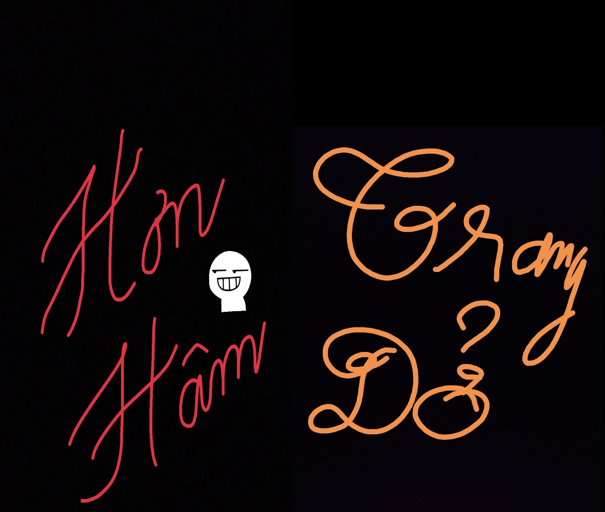
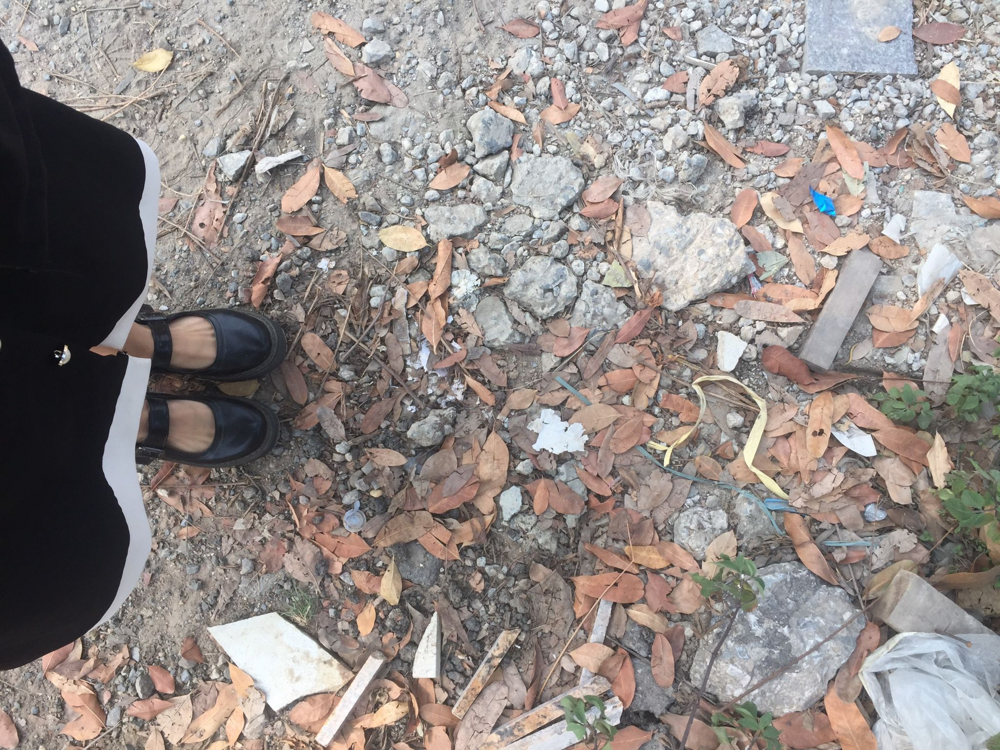
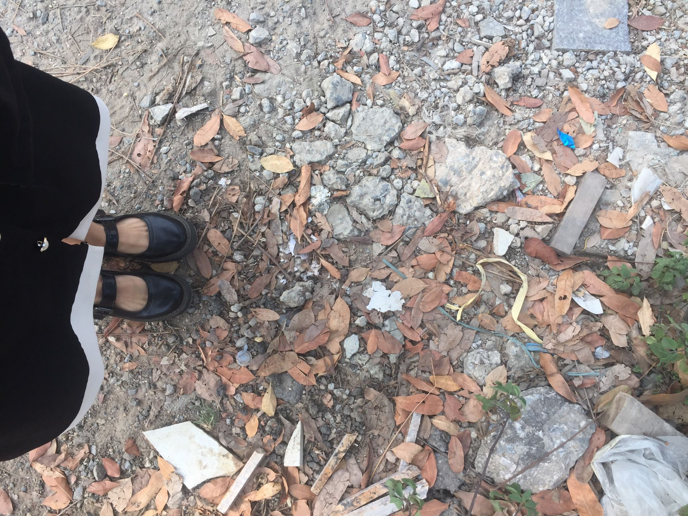
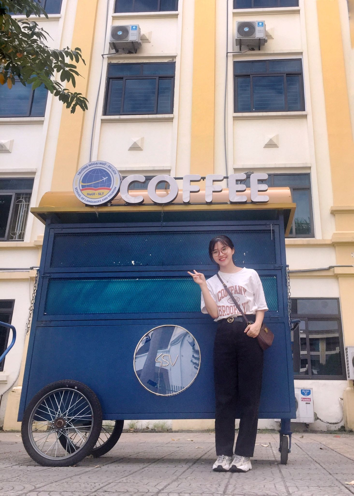
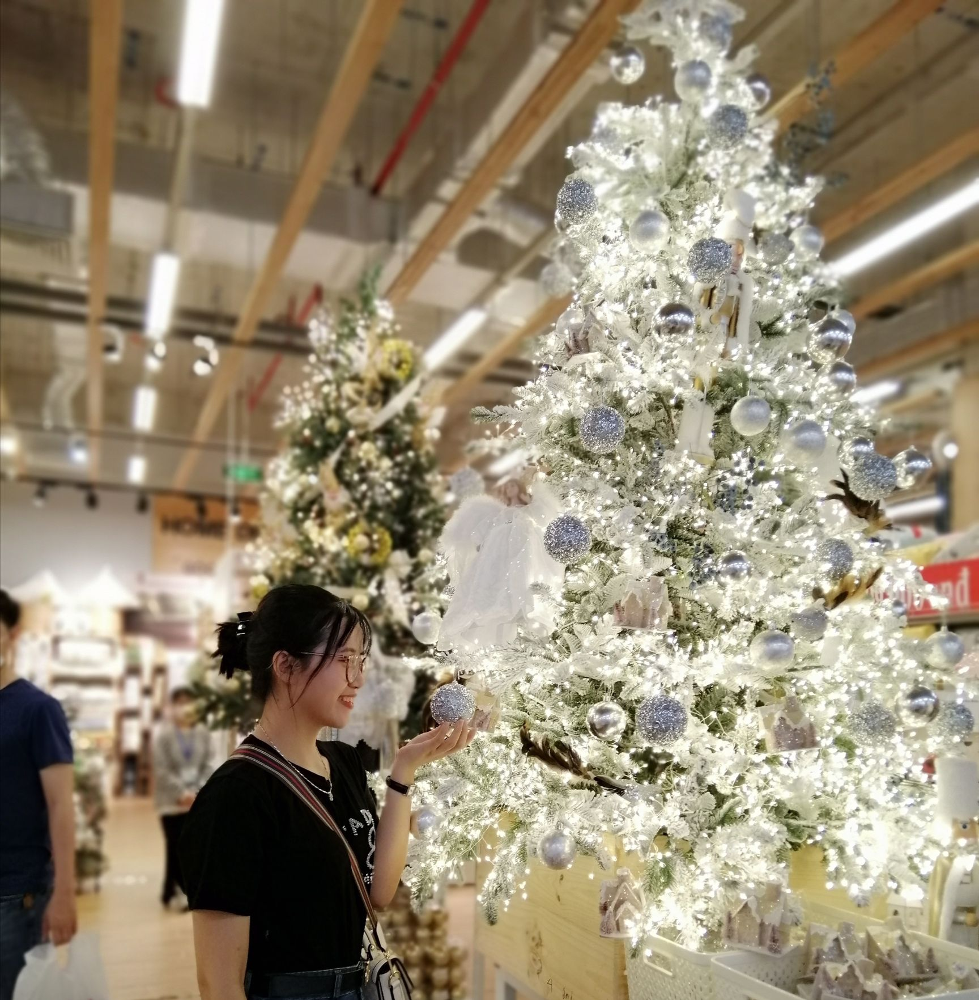
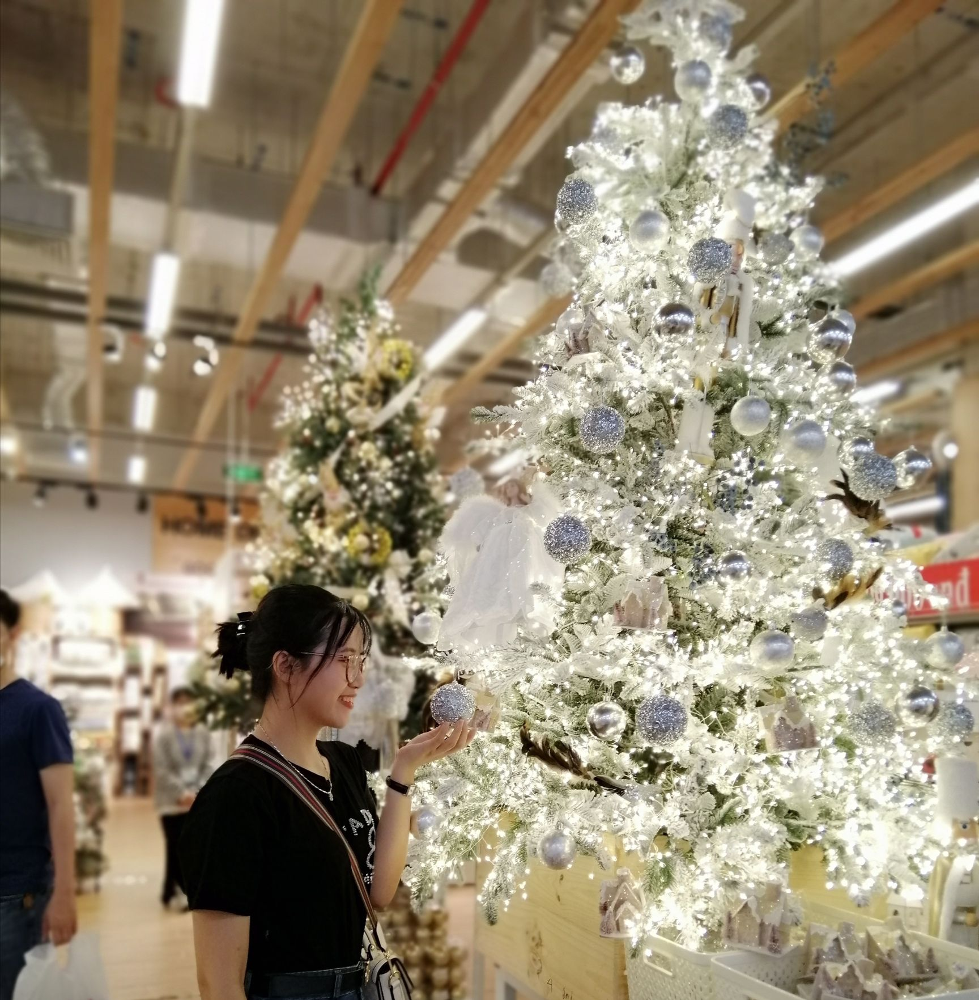

HƠN STORY 📖
Nhấn "↓" để bắt đầu
Trong quá khứ, anh sống một mình, tận hưởng sự cô đơn

NHƯNG...


Anh vẫn lạc quan, mỉm cười và chờ đợi một ngày nào đó có thể gặp người con gái của đời mình

Cứ thế mỗi ngày sau khi tan ca về đến nhà anh lại lụi cụi học tiếng Nhật , khi thì nghe nhạc, xem phim...

Mọi người xung quanh vẫn luôn hỏi rằng anh có ny chưa. Và lúc đấy anh chỉ cười và nói vui là em có rồi và bọn em đang yêu xa...

Cô ấy đang ở bên người khác, lúc mơ thấy, lúc không

Lúc đấy anh có hỏi và biết được em sinh năm 2000.

Và lần đầu nghe được giọng em khi nghe điện thoại anh đã ấn tượng về cách nói chuyện cũng như giọng nói (toàn "ạ"hihi)

Cũng vì giai đoạn đó anh đã bàn giao thay đổi đảm nhiệm và cũng nhiều vấn đề phát sinh trong công việc nên gần như cũng không liên lạc hay nhận thông tin từ em anh cũng đọc và ghi nhận (việc này chắc làm ai đó tủi lòng nhưng cho anh xin lỗi nhé)

Mãi đến tháng 9 khi tình cờ thấy story của em thì mới biết em học cùng trường với mình rồi 2 đứa bắt đầu nhắn những tin nhắn đầu tiên ....

Rồi cũng đến lần đầu tiên gọi điện anh cũng không thể ngờ
rằng lại có 1 người mà mình có thể nói chuyện suốt hơn 6h như vậy ( nếu lúc đó không phải là
2h30 sáng có khi lâu hơn nữa em nhỉ )
 


húng ta cứ thế nhắn tin gọi điện mỗi tối kể nhau những chuyện trong công việc, cuộc sống và gia đình nhưng mới chỉ biết nhau qua những tấm ảnh 2 đứa gửi .Và rồi anh đã dặn lòng mình nhất định phải gặp người con gái xinh đẹp dễ thương này
Ngày đầu tiên mình gặp nhau là ngày 05/11 em nhỉ?
 

Lúc gặp nhìn từ xa thấy em anh đã nhận ra và đi ra phía
sau gọi điện và định làm em bất ngờ nhưng lại bị em nhận ra và bất thành hihi

Nếu như trước khi gặp em có nói đùa với anh là anh sẽ bất
ngờ nhưng mà anh bất ngờ thật vì em còn xinh xắn đáng yêu hơn trong ảnh nữa .

Cuộc sống hay công việc thì ai cũng có lúc vui, lúc buồn và anh cũng không ngoại lệ. Mỗi lúc như vậy người anh nghĩ đến đầu tiên là em người mà anh muốn chia sẻ mọi niềm vui trong cuộc sống, người mà mỗi khi buồn anh nghĩ đến nụ cười của người ấy thì mọi thứ đều tan biến

Đối với anh em là 1 người con gái rất đặc biệt nên anh đã ấp ủ phải bày tỏ suy nghĩ cảm xúc của mình với một cách đặc biệt

Anh đã nói với bé là anh thích em bằng tiếng Nhật là 好きです（sukidesu) nhưng nếu nói bằng tiếng Nhật hay tiếng việt thì anh nghĩ cũng chỉ 2 chúng ta biết thôi nhỉ vậy nên hôm nay anh muốn nói để cả thế giới biết bằng thứ tiếng mà ai cũng hiểu I LOVE YOU


-- Nhấn “Esc"